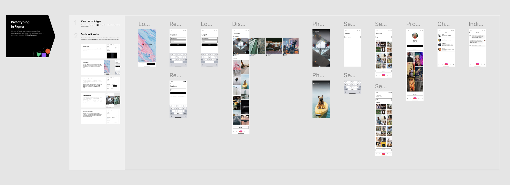
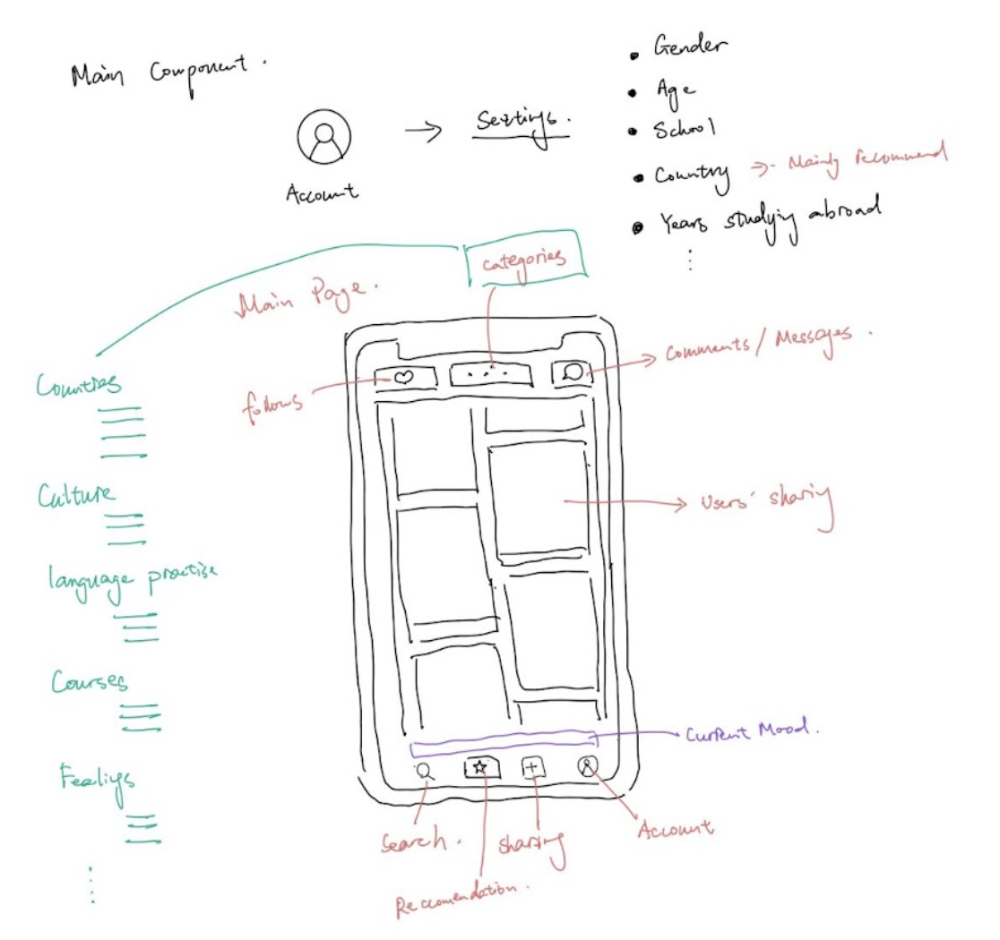

Personal Projects
Here are my personal design work, including visual and graphic design projects. This project addresses international students' emotional challenges by fostering connections through mood-based sharing, group chats, and cultural integration tools. User-centered design and iterative testing ensure a supportive and intuitive platform.


Creative Projects
- Web Design Portfolio: Interactive, user-friendly websites showcasing creativity and technical expertise in personal and academic projects.
- Artwork: Versatile digital and traditional art pieces reflecting detailed craftsmanship and storytelling.
- User Experience Design: Intuitive layouts, seamless navigation, and engaging features refined through thoughtful testing and feedback.